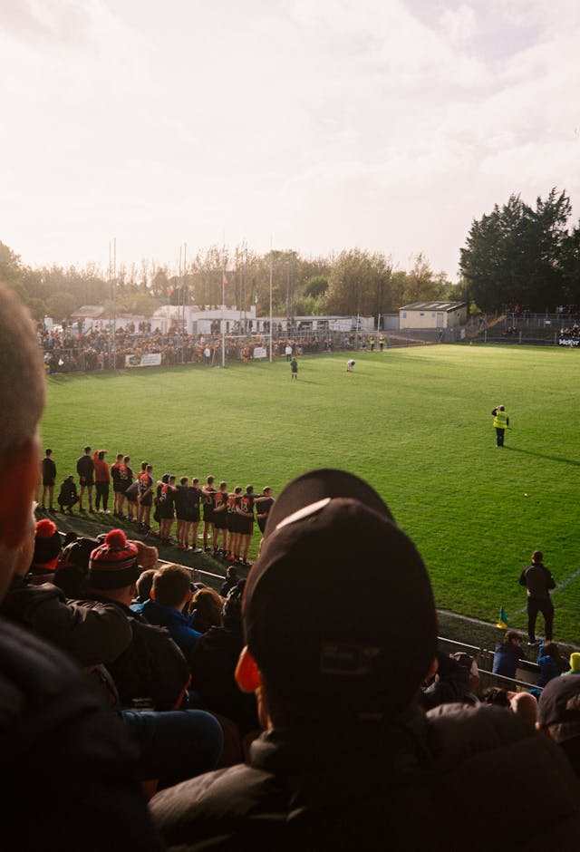
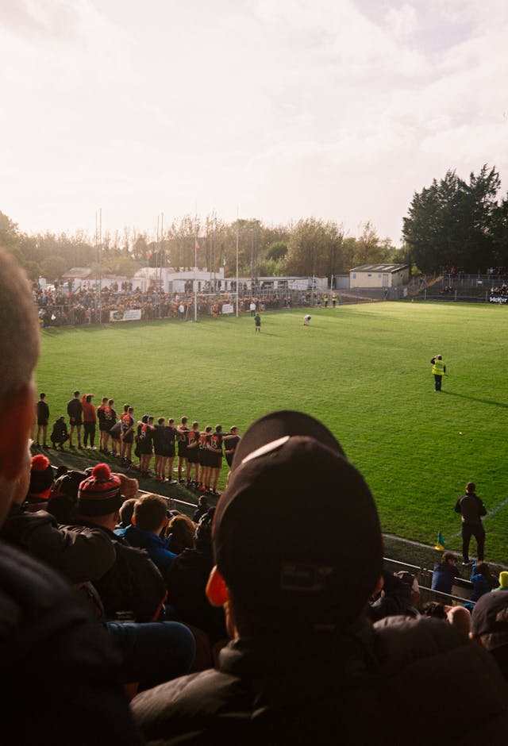

Fútbol Fantasy es una escuela dedicada a la formación de jóvenes talentos en el fútbol. Contamos con entrenadores
profesionales y un ambiente diseñado para potenciar las habilidades técnicas, tácticas y físicas de cada jugador.
Nuestros programas incluyen entrenamientos personalizados, competiciones internas y oportunidades para participar en torneos locales.
Creemos en la disciplina, el trabajo en equipo y el desarrollo integral de nuestros jugadores. Desde los más pequeños
hasta jóvenes con aspiraciones profesionales, ofrecemos un espacio donde aprender y disfrutar del fútbol al máximo.
Además, en Fútbol Fantasy fomentamos valores como el respeto, la perseverancia y la pasión por el deporte, formando no solo jugadores, sino también personas íntegras dentro y fuera del campo. Nuestro enfoque educativo y deportivo permite a cada participante desarrollar su potencial al máximo, brindándoles herramientas para afrontar desafíos y alcanzar sus metas tanto en el fútbol como en su vida diaria.
 
